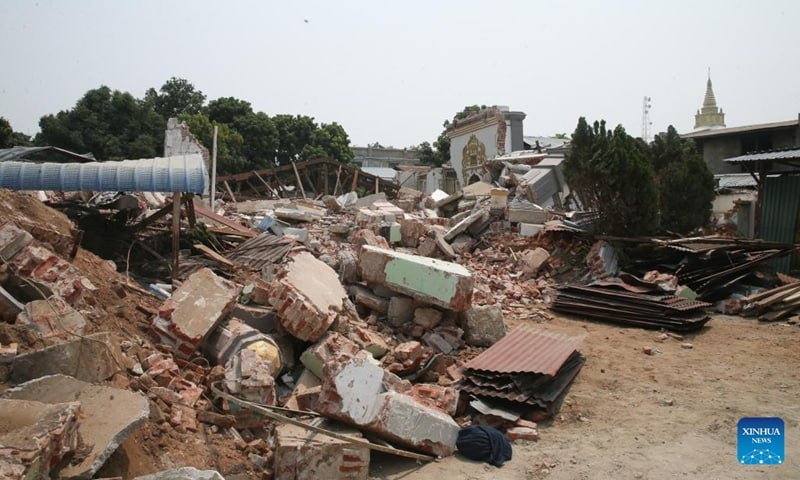
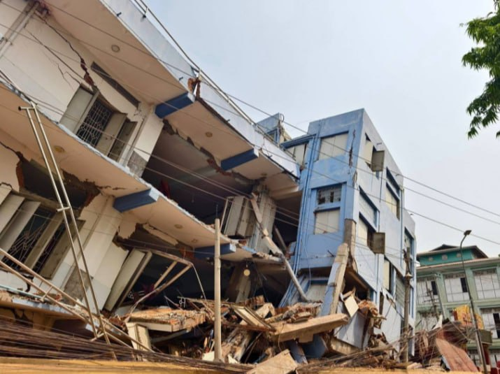
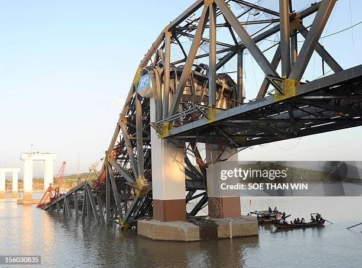
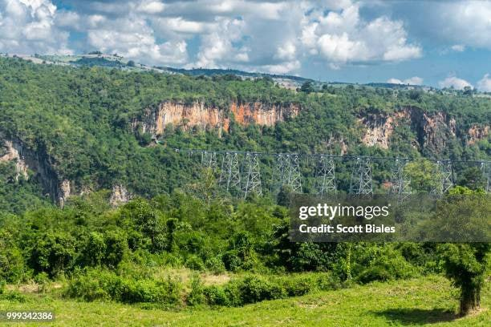

Myanmar Seismic Risk Map
Focused on Central Myanmar & the Sagaing Fault Zone around Mandalay
Risk Legend
Significant Regional Earthquakes
Recent seismic events recorded around Mandalay and across Myanmar

28 March 2025 Sagaing Quake
Struck the Sagaing Region with an epicenter close to Mandalay city, causing strong ground motions across central Myanmar.

Oct 23 Tremor (10:36 PM)
A moderate magnitude 5.2 earthquake struck Myanmar at 10:36 PM (local time), creating noticeable shaking.

Fri 23 Oct 2026 Seismic Event
Recorded at 17:06:25 UTC at a depth of 110 km in Myanmar, registering as a localized intermediate earthquake.

2012 Shwebo Earthquake
Severe historical strike-slip earthquake causing major surface rupture along the Sagaing Fault near Shwebo.
2016 Chauk Earthquake
Deep major quake causing shaking felt throughout central Myanmar and damaging historic ancient pagodas in Bagan.

Pyin Oo Lwin Slope Gap
Seismic stress gap identified along the mountain fault slip interface east of Mandalay requiring active structural monitoring.
Estimated Damage Level Comparison
Comparative breakdown across People, Land, Houses, and Jobs for the 6 Major Regional Earthquakes
| Earthquake Event | People Affected | Land / Soil Impact | Houses / Buildings | Jobs & Economy |
|---|---|---|---|---|
| 2025 Sagaing M7.7-7.9 Quake | ~120,000 displaced; 450 injured | Severe surface rupture & landslides | 3,500+ unreinforced homes collapsed | Local markets halted for 3 weeks |
| 2012 Shwebo M6.8 Quake | ~50,000 affected; 26 casualties | Soil liquefaction near Irrawaddy river | 400+ monasteries & brick houses cracked | Agricultural & local trade delayed |
| 2016 Chauk M6.8 Quake | ~35,000 affected; minor injuries | Central basin shaking; wide felt area | 396 ancient pagodas & brick structures damaged | Tourism and heritage restoration costs |
| Oct 2026 M5.2 Tremor | ~5,000 startled; zero casualties | Minimal ground displacement | Hairline cracks in older brick walls | Normal business resumed same day |
| Naypyidaw Region M4.8 Quake | ~8,000 affected; no injuries | Stable rock base damping | Minor superficial plaster fall | Government administration unaffected |
| Pyin Oo Lwin Prediction Gap | High risk for 250,000+ residents | Mountain slope instability zones | Vulnerable unretrofitted hillside villas | Critical tourism & agricultural commerce |
Impact by Event
| Earthquake | People | Homes | Land / Infrastructure | Jobs / Economy |
|---|---|---|---|---|
| 2025 Sagaing M7.7–7.9 | Very High | Very High | Very High | Very High |
| 2012 Shwebo M6.8 | High | High | High | High |
| 2016 Chauk M6.8 | High | Medium–High | High | Medium–High |
| M5.2 Tremor | Medium | Medium | Low–Medium | Low–Medium |
| M4.6 Deep Event | Low | Low | Low | Low |
| Prediction / Risk Zones | Potential | Potential | Potential | Potential |
Why impacts are different
People
Estimated disruption from injuries, displacement and interrupted daily life[cite: 5].
Homes
Estimated pressure on housing, repairs and temporary shelter needs.
Land & services
Road access, utilities and important public infrastructure.
Jobs & economy
Estimated interruption to workplaces, shops and local services.
Magnitude Damage Level & Preparedness Guide
Click a magnitude tier on the left to view its specific damage level and safety preparation.
Magnitude Tiers
Magnitude 4.0 – 4.9 (Minor Shaking)
Estimated Damage: Generally light damage to indoor objects. Standing vehicles may rock slightly. Dishes rattle, windows crack slightly in poorly built structures, and hanging objects swing noticeably.
What to Prepare:
Secure hanging photo frames and light fixtures. Ensure family members know how to react instantly if shaking intensifies.
Magnitude 5.0 – 5.9 (Moderate Damage)
Estimated Damage: Can cause major damage to poorly constructed buildings. Slight to moderate damage to well-built structures. Unsecured furniture may overturn, and heavy plaster walls can crack.
What to Prepare:
Anchor heavy bookshelves and televisions to wall studs. Inspect home gas lines and maintain a basic 72-hour Go-Bag.
Magnitude 6.0 – 6.9 (Strong & Destructive)
Estimated Damage: Destructive across populated areas up to tens of kilometers away. Substantial damage to ordinary brick buildings with partial collapses, cracked underground utility pipes, and potential soil liquefaction in saturated areas.
What to Prepare:
Retrofit older unreinforced masonry structures. Conduct regular Drop, Cover, and Hold drills. Keep emergency water reserves (1 gallon per person daily).
Magnitude 7.0 and Above (Major / Catastrophic)
Estimated Damage: Major catastrophic damage. Most masonry and frame structures destroyed along with foundations. Serious damage to bridges, dams, and railway lines. Widespread landslides and severe economic disruption.
What to Prepare:
Strict adherence to modern building codes (base isolators, shear walls). Establish community stadium evacuation routes and pre-designated family check-in communication protocols.
Emergency Assembly Points & Direction Map
Click the open stadiums below to inspect street routes, emergency relief tents, water stations, and donation campaigns.
Stadium Relief Hubs
Major open stadiums designated for post-earthquake evacuation, relief tents, emergency food/water supplies, and donor campaigns:
- Mandalay Yathar Stadium: Tent camp, medical station & clean water tanks.
- Aung Myay Thar San Ground: Emergency supply distribution & donor reception.
- Ba Htoo Stadium: Main command center, rescue helicopters & family tracing desk.